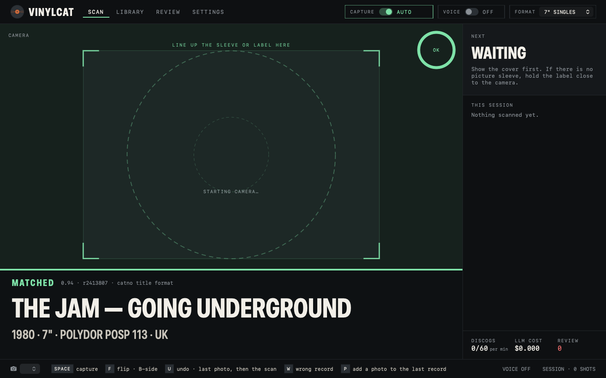
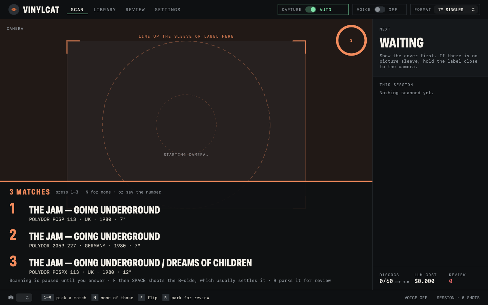
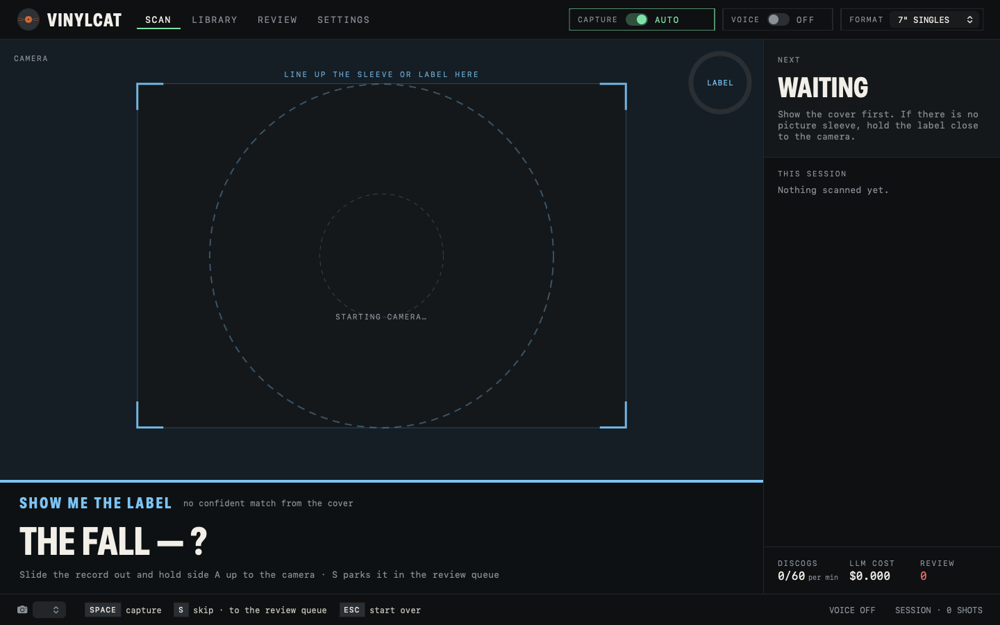
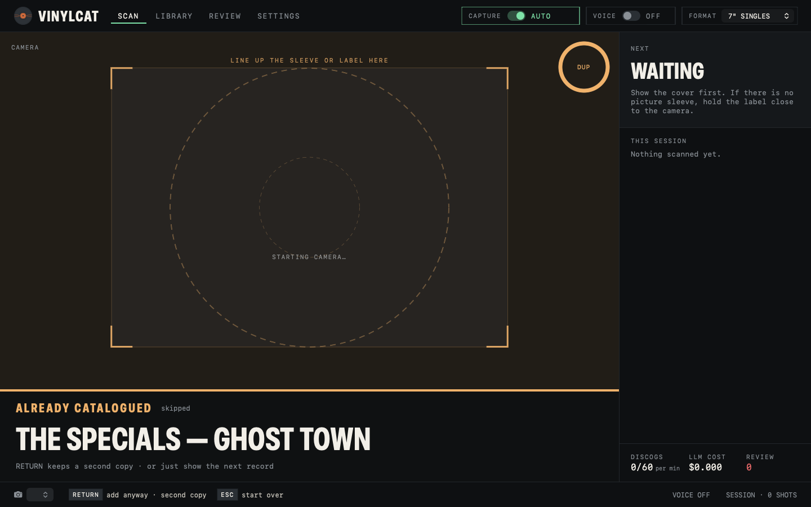
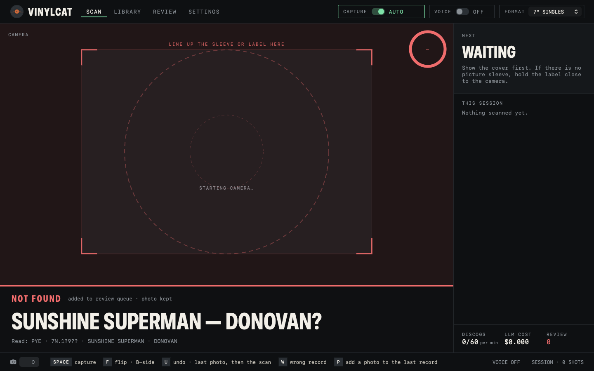

Hold up a record. That's it.
VinylCat watches your Mac's camera. Hold a sleeve or label still for a second and it takes one photo, reads it, finds the release on Discogs, says the artist, title, year and format out loud, and files it in your library. Hands stay on the records.

Six steps, about two seconds
Only one step costs money and only one talks to Discogs. A clean barcode skips the paid step entirely. The long version, with the exact prompts →
Camera watch
Waits for the record to be held still and sharp for about a second, then takes exactly one still. Never fires twice on the same record. Built-in camera or an iPhone over Continuity Camera. SPACE forces a shot.
Local read
Apple Vision on the Mac: barcodes, text in three orientations, then a zoom pass that magnifies the small print. A sieve picks the tokens that look like catalogue numbers, "POSP 113", "FAC 73".
Vision model
No clean barcode? The photo and the OCR hints go to OpenAI or Google, forced into thirteen fixed fields. Your own key. No key means OCR-only: fine on labels, worse on artwork covers.
Discogs search
Up to six queries, strongest key first: catalogue number, then barcode, then label and title, then artist and title. Stops the moment a precise key lands.
Rank and decide
Every hit scored 0 to 1 on catalogue number, barcode, label, title, format and year. 0.85 and up is a match. Between 0.60 and 0.85 it asks you. Below that, not found.
Outcome
Saved and spoken. Or "three matches, say one, two or three". Or "show me the label". Or already catalogued. Or not found, parked with its evidence in the review queue. Nothing is ever lost.
Five colours, no reading required
Every scan ends in one of five states. Each has its own colour, chime and spoken line, so you can keep your eyes on the shelf.
Confident match. Artist, title, year and format read out. In the library, and in your Discogs Collection if sync is on.
Several pressings within reach of each other. Pick by voice or key, flip to the B-side to settle it, or park it.
The sleeve was not enough. Slide the record out and hold side A up. The label usually carries the catalogue number.
You have this one. RETURN keeps a second copy on purpose. Otherwise show the next record.
Nothing on Discogs scored well enough. The photo, the model's reading and every candidate wait in Review.




Built for a box of singles, not a demo
Say it, don't click it
Capture, flip, back cover, gatefold, disc two, skip, done, undo, review, again, one to nine, add anyway, wrong record, pause. On-device speech recognition, nothing leaves the Mac. Every command has a key too.
It reads the result back
Artist, title, year, format. A different chime for each outcome. You never have to look at the screen mid-stack.
7" · 12" · LP sessions
Set the format once, or say "forty-fives", "twelve inch", "albums". It filters Discogs and shapes the prompts.
Search, value, export
Every record with its photo, Discogs release and a value in your Discogs currency. CSV export. Type one in by hand with "+ ADD RECORD".
A folder of photos, no webcam
Drop a folder of label or sleeve photos on the Library and every one goes through the same pipeline. Matched, parked, duplicate or error, one line per photo.
Nothing is lost
Not found, ambiguous and wrong-match records queue up with the OCR lines, the model's reading and every ranked candidate. Re-search, pick, or save as a manual entry.
Thumbs up, thumbs down
Wrong record? One word or one key. It leaves the counts and the Discogs Collection but the evidence stays, so the matcher can be tuned from real mistakes.
Two-way sync, off by default
Switch it on and matches go to your Collection as they are saved. Pull brings the Collection down as records to photograph later. It never deletes anything on Discogs.
Your data on your Mac
SQLite and JPEGs in your own Application Support folder. Keys in a file only you can read. No account, no server. The one thing it sends home is an anonymous launch count — a switch in Settings turns that off.
The words that work
The bottom bar always shows exactly which keys apply right now, with the spoken word beside each while VOICE is on. Numbers four and seven need "number" in front, because "four" sounds like "for" and "seven" like "seven inch".
| Say | Or press | Does |
|---|---|---|
| capture | SPACE | force a shot now |
| flip · B-side | F | photograph the other side of the open record |
| back cover · gatefold · disc two · add photo | P | add that photo to the last record |
| one … nine | 1–9 | pick from the candidate list |
| none | N | none of those |
| undo | U | remove the last photo, then the record |
| wrong record | W | thumbs-down the last match |
| skip · done | S · D | skip the shot being asked for · close the record |
| review · later | R | park it for the Review tab |
| add anyway | RETURN | keep a second copy of a duplicate |
| forty-fives · twelve inch · albums | — | switch the session format |
| pause · resume | — | stop or start auto-capture |
How well it reads
The app ships with its own evaluation: the real photos in the library, scored against each record's known catalogue number. These are the numbers from 92 photos on 6 September 2026.
Three things, two of them free
- A Mac on macOS 15 or laterApple silicon only for now. Built-in camera, or an iPhone over Continuity Camera for a better lens.
- A Discogs personal tokenFree, from discogs.com/settings/developers. Without one lookups still work at 25 a minute instead of 60, but nothing can go to your Collection.
- An OpenAI or Google AI key, optionalAbout a tenth of a cent per record, so the account needs billing on. Without it the app runs OCR-only: good on labels, poor on artwork.
- Camera, microphone and speech permissionsmacOS asks once, in the setup wizard. Voice needs Dictation switched on.
Things to know before you download
- Not signed by ApplemacOS blocks the first launch with a dialog that only says Done. It takes six steps in System Settings, once. They are written out here.
- Version 0.2.1It has been used on one desk, on one collection. Expect rough edges, and the review queue to earn its keep on worn labels.
- Artwork covers are the weak spotLabels carry catalogue numbers; picture sleeves often don't. When the cover isn't enough it asks for the label.
- Discogs is the source of truthIf a pressing isn't on Discogs, VinylCat can't match it. Save it as a manual entry instead.
Free. Your keys, your Mac.
macOS will refuse to open VinylCat the first time. The app is not signed with an Apple Developer ID and not notarised, so Gatekeeper shows "Apple could not verify VinylCat is free of malware" with only a Done button. Right-click → Open no longer works on macOS 15. The way in is System Settings → Privacy & Security → scroll to the bottom → Open Anyway. Six steps, once, written out here.
Free, and it runs on your own keys
There is no licence, no subscription, and nothing phoning home beyond the launch counter above. If it saves you an afternoon with a box of singles, buy the developer a coffee. The app will ask politely after 25 records and get ruder from there.